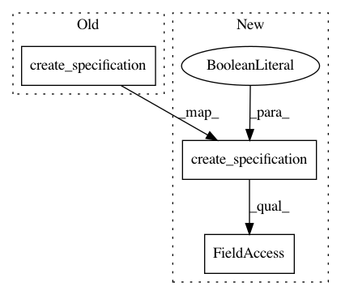

d1419f8f516af6c01879b9430594e72bd5996243,tests/test_dockerizer/test_scheduler.py,TestDockerizerScheduler,test_scheduler_create_build_job_of_already_done_job,#TestDockerizerScheduler#,64
Before Change
build_job = BuildJobFactory(project=self.project,
user=self.project.user,
code_reference=self.code_reference,
config=BuildSpecification.create_specification(config))
build_job.set_status(JobLifeCycle.STOPPED)
assert BuildJob.objects.count() == 1
After Change
project=self.project,
user=self.project.user,
code_reference=self.code_reference,
content=BuildSpecification.create_specification(config, to_dict=False).raw_data)
build_job.set_status(JobLifeCycle.STOPPED)
assert BuildJob.objects.count() == 1
In pattern: SUPERPATTERN
Frequency: 3
Non-data size: 3
Instances
Project Name: polyaxon/polyaxon
Commit Name: d1419f8f516af6c01879b9430594e72bd5996243
Time: 2019-05-16
Author: mouradmourafiq@gmail.com
File Name: tests/test_dockerizer/test_scheduler.py
Class Name: TestDockerizerScheduler
Method Name: test_scheduler_create_build_job_of_already_done_job
Project Name: polyaxon/polyaxon
Commit Name: d1419f8f516af6c01879b9430594e72bd5996243
Time: 2019-05-16
Author: mouradmourafiq@gmail.com
File Name: polyaxon/factories/factory_build_jobs.py
Class Name: BuildJobFactory
Method Name: BuildJobFactory_1
Project Name: polyaxon/polyaxon
Commit Name: d1419f8f516af6c01879b9430594e72bd5996243
Time: 2019-05-16
Author: mouradmourafiq@gmail.com
File Name: tests/test_dockerizer/test_scheduler.py
Class Name: TestDockerizerScheduler
Method Name: test_scheduler_create_build_job_of_already_running_job